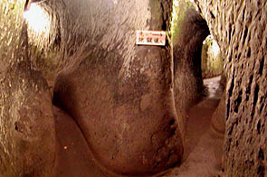

桂昌寺跡地獄極楽/大分県安心院町
大分県安心院（あじむ）町。
鏝絵とスッポンで有名な町だがもうひとつ隠れた名所がある。
桂昌寺跡地獄極楽という洞窟型地獄巡りで、江戸の天台僧午道法印が文政3（1820）年につくったものだ。
文字の読めない庶民のためにつくられたという江戸のビジュアル重視の体感型仏教テーマパークである。
案内図
右下の入口から入って閻魔の庁を過ぎ周回通路の地獄道、直進通路の極楽道という構成になっている。
恐らくつくられた当時はマトモな照明などなくロウソク一本持って入洞するような感じだろうから、この一周するだけの地獄道とて相当の恐怖を感じたと思う。
これは真っ暗な洞窟で迷子になった人にしか判らない恐怖なのだ。
コンクリートで補強された入口をはいるとすぐにある閻魔の庁。中央に閻魔大王、左右に牛頭羅刹、馬頭羅刹が構える。
これは九州、特に大分の石像に見られる特徴なのだが、やたらに頭がでかい。4等身が標準レベルといってもイイくらい頭がデカい。
コレがまた何ともイイ感じなのだ。このプロポーションの悪さが大分の石仏の特徴であり魅力でもある。従って閻魔大王といえどもユーモラスだったりする。

さて、めでたく閻魔様の裁きを終えると地獄極楽業界の常に従って地獄巡りが始まる。上写真は閻魔の庁を過ぎた辺り。
ここで右の地獄道と左の極楽道が分岐する。「先に地獄道へ」とあるので地獄道へ。この分岐点のすぐ先にさらに分岐があって（上写真右端の岩盤の向こう側）そこが地獄道の始点で、写真右側に見えている通路は地獄道の終点となる。
地獄道は反時計周りに一周していく道で距離は36メートル。そんなに狭くはないのと電球がついているので歩行は楽だ。
通路の所々にこのような石像が置かれている。一つ一つキャプションが付いているのが遊園地っぽい。
更に進むと青鬼、赤鬼がいる血の池地獄。鬼もやっぱり恐くない。
地獄道の終わりの辺りに胎内くぐり入口という穴があった。御覧の通り水浸しだったので降参して入りませんでした。
見た目、四つん這いにならないと入れなさそうだが入った人のハナシではしゃがんだ状態で行けるそうだ。
地獄道が終わると先ほどの分岐点に戻り、今度は極楽道。こちらは直進の通路で出口まで一直線の楽々通路でその分面白みにも欠けるが、これもまた地獄極楽界の常。
この業界、極楽は地獄の刺身のツマなのです。
そんなこんなで洞窟の外に出る。あ、出口近くに胎内めぐりの出口がありました。
25メートルの極楽道とほぼ平行していたこの胎内めぐり、結構な距離のだった事になる。
さて。
これで終わらないところがここの地獄極楽の恐ろしいところだ。
洞窟を出るとすぐにまた岩壁に掘られた穴がある。そこには極楽浄土に到る縦穴があるのだ。
縦穴を下から見上げたの図。縦穴は針の耳と呼ばれ、鎖伝いに登っていかなければならない。
まさに立体胎内めぐり。高さは5メートル。
意を決して登ってみる。見た目よりかなりハードな縦穴だ。一応足を掛ける窪みがあるのだが柔らかい砂岩系の岩なのでかなり摩滅している。
足と背中で踏ん張り何とか上まで辿り着く。すると・・・
あああ、何とな〜く想像通りの展開。丘の上に石像が点在していた。
オチとしてはちょっと弱かったかな、でも地獄極楽界で極楽が２段オチになっているところというのは大変珍しいと思う。
その意味でここの地獄極楽は極楽重視の視点に立った画期的なスポットと考えられるが、如何なモンでしょう？
っていうか地獄より極楽の方が恐かったぞ！
ちなみにこの丘の上の極楽浄土へは縦穴を使わず階段でも迂回できたのだが、現在は崖崩れでもあったのか、階段側の通路が通行止めにされているので、この縦穴を登るしか道がない。
・・・という事はここをまた降りなきゃいけないのかあ〜
穴の底で子供がコケているのがお分かりだろうか。ウチの愚息です・・・
2002.11.
珍寺大道場 HOME